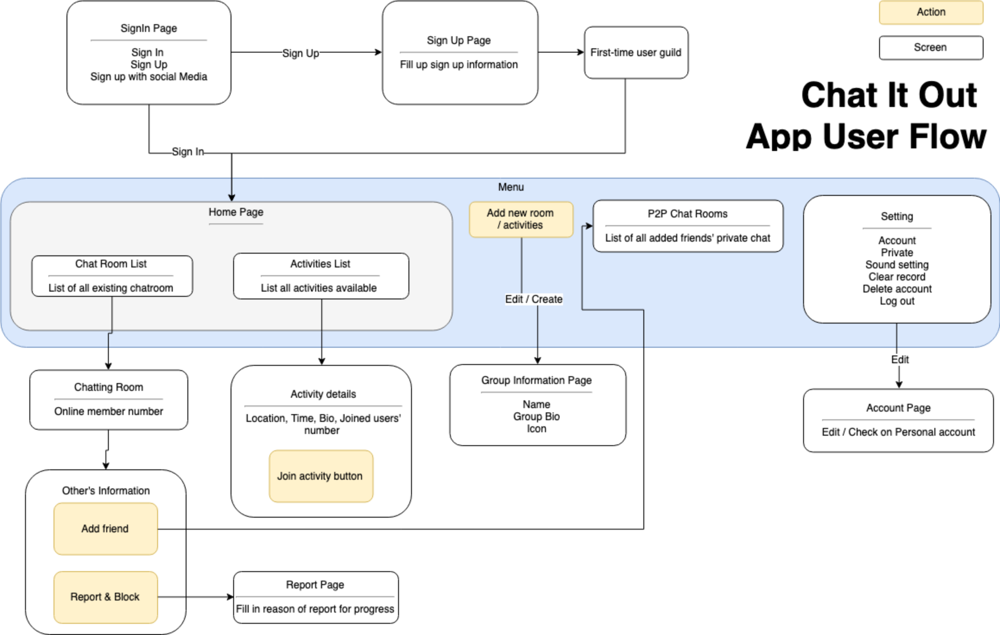

Competitive Analysis
To understand more about competitive, the following analysis table was create as a comparison. To have a better view of all the pros and cons.
Have you ever feel ALONE?
CHAT IT OUT! is an health friends making app, a platform with AI for people to meet new friends. This is an conceptual app project, which I start from research to design process.

It’s important to understand the general type of users by looking into to communicate insights and user goals. After interviews with potential users, the following persona had been created.
To understand more about competitive, the following analysis table was create as a comparison. To have a better view of all the pros and cons.
After research on the most popular used chatting app. Such as WhatsApp, Telegram, Tinder, etc. These apps are detected with only the “block & report” function to ensure the quality of the application. For personal information transition, most of them don’t have any warning about protecting personal data.
In Chat It Out!, the app is provided with both wordings detection to create a friendly-healthy platform for different ages. Moreover, it also provided with the “activities” page to encourage users to have outdoor activities. To ensure the safety of users, the app has a special designed function to record the location of users.
The layout design is simple and clear to let users easily get used to. The color sticks closely to the brand scheme, to create a happy & enjoyable feeling by using color orange and pink. The user flow is specially designed to use minimal amount of clicks. The menu is hidden at the bottom of the application. Anytime user in needs, simply swap and click can fulfill users’ goals.
One of the biggest reasons why workflow is important is because it gives we a greater insight into the project. From then on, we could use the said insights to create a better workflows, and improve the bottom-line of whole project.
Wireframes are not high fidelity visual representations of the mobile app. They are designed to be quickly built with enough detail to provide a general blueprint. I had the following created as a part of one of my imputations.

The layout have justified based on some user’s suggestions. The theme color is set to orange and magenta.
Simple and clear is emphasised to let users easily get used to. The color sticks closely to the brand scheme, to create a happy & enjoyable feeling by using color orange and pink. The user flow is specially designed to use minimal amount of clicks. The menu is hidden at the bottom of the application. Anytime user in needs, simply swap and click can fulfill users’ goals.
Aims for the platform
Chat It Out! is a solution that will allow citizens to find their new friends matches.
The app is simple to use and allow users to easily make friends matches and is a full-health chatroom through AI detection and tracking.
AIMS :
1. NOT FOR DATE! JUST FOR FRIENDS!
2. AN HEALTHY PLATFORM
3. CONVIENT
Usage of AI
Due to the unproper usage of the netizen, AI is used as a surveillance role for maintain a healthy environment.
This could reduce and protect users:
1) No Pornography
2) No Gambling
3) No Drug Abuse
=> To filter and track for users ofter no obeying.
Promotion of friends making - Channel & Activities
Different types of chat room channels are provided for users.
Activities channel provides users with outgoing activities.
To ensure the safety of users, location tracking, and SOS service is provided in need.
Gets your idea out! Always update yourself
The time I have such idea was the time AI starts to promoted in this industry. Through AI technology is getting more and more advanced, it was not introduced to such platform. As AI training is a long and complex process. However, we should keep ourselves updated with the trend and implement to our design!
View my other works